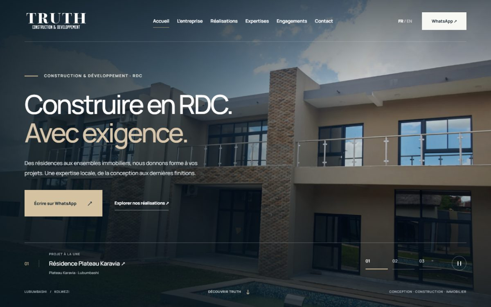
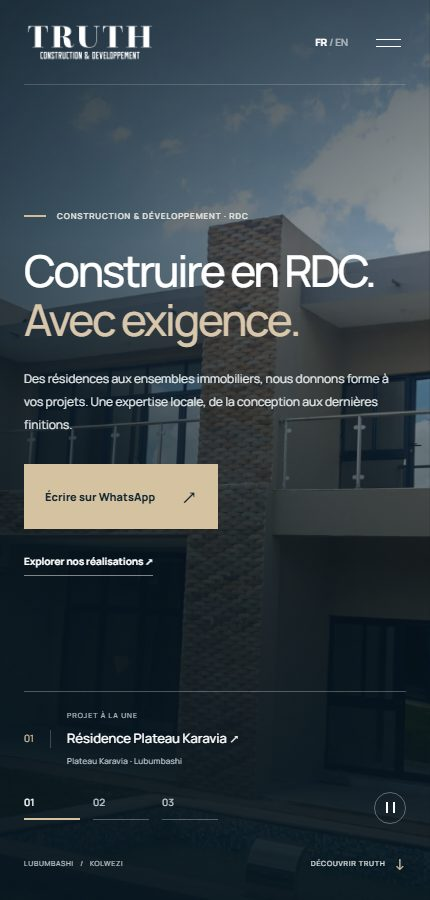

TRUTH Construction & Development
Un constructeur de Lubumbashi, présenté par ses chantiers.


Le contexte et le besoin
TRUTH Construction & Development conçoit et bâtit des résidences, des ensembles immobiliers et des ouvrages à Lubumbashi et à Kolwezi. L'entreprise avait besoin d'une présence en ligne à la hauteur de ses réalisations, en français et en anglais.
Dans ce marché, les demandes passent par WhatsApp et beaucoup de clients n'ont pas d'adresse e-mail : le site devait mener à une conversation plutôt qu'à un formulaire, et s'afficher vite sur les connexions mobiles.
Notre contribution
- Site statique bilingue : accueil, entreprise, réalisations, expertises, engagements, contact et sept pages de projet
- Accueil plein écran avec diaporama des réalisations, en-tête transparent sur la photo et contrôle de pause
- WhatsApp comme parcours principal : chaque bouton ouvre une conversation avec le sujet déjà rédigé, y compris depuis chaque projet et chaque expertise
- Galeries photo avec visionneuse au clavier et au glissé, plan schématique des chantiers et plan du bureau chargé à la demande
- Estimateur de coût au mètre carré, prêt à être activé dès que l'entreprise fournit ses tarifs
Les choix d'usage
- WhatsApp, téléphone et adresse e-mail à copier : aucun compte ni formulaire à remplir
- Pages statiques sans framework ni dépendance, légères sur les connexions mobiles
- Aperçus flous d'environ un kilo-octet : l'accueil prend les couleurs de la photo avant qu'elle ne soit chargée
- Version anglaise pour les clients miniers, les expatriés et la diaspora
Ce que vous pouvez explorer
Le lien de production ouvre le site en ligne de l'entreprise. La copie de démonstration reproduit le site tel que livré, avec les vraies informations de l'entreprise ; ses boutons WhatsApp, téléphone et e-mail sont désactivés pour que vos essais n'atteignent jamais le client.
Livraison et exploitation
- Hébergement Vercel avec HTTPS et déploiement automatique depuis le dépôt GitHub
- Générateur Node sans dépendance : une commande reconstruit l'ensemble du site
- URL canoniques, balises Open Graph, données structurées schema.org et plan du site
- Carte de partage aux couleurs de l'entreprise pour les liens envoyés sur WhatsApp
- Coordonnées, numéro WhatsApp et domaine regroupés dans un seul fichier de configuration
- Aucune base de données ni serveur applicatif : rien à sauvegarder ni à redémarrer
- Photographies issues de la plaquette de l'entreprise, sans banque d'images
- Animations désactivées pour les visiteurs qui préfèrent réduire les mouvements
Technologies du projet
Et pour votre entreprise ?
Partons de vos besoins pour adapter les parcours, les intégrations et l’accompagnement. Les services associés vous aident à préparer notre premier échange.
Contact
Parlons de votre projet
Décrivez votre besoin. Nous définirons ensemble la prochaine étape.